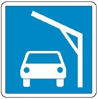

- E.5
Erlaubnis zum Stilliegen auf der Seite der Wasserstraße, auf der das Zeichen steht.
(§ 7.05 Nr. 1)
... nicht darstellbares Tafelzeichen
- E.5.1
Erlaubnis zum Stilliegen auf der Wasserfläche, deren Breite, gemessen vom Aufstellungsort, auf dem Tafelzeichen in Metern angegeben ist.
(§ 7.05 Nr. 2)
... nicht darstellbares Tafelzeichen
- E.5.2
Erlaubnis zum Stilliegen auf der Wasserfläche zwischen den zwei Entfernungen, die, gemessen vom Aufstellungsort, auf dem Tafelzeichen in Metern angegeben sind.
(§ 7.05 Nr. 3)
... nicht darstellbares Tafelzeichen
(Fundstelle: Anlageband zum BGBl. II Nr. 38 v. 16.9.1997, S. 106)
- E.5.3
Höchstzahl der Fahrzeuge, die auf der Seite der Wasserstraße, auf der das Tafelzeichen steht, nebeneinander stilliegen dürfen.
(§ 7.05 Nr. 4)
... nicht darstellbares Tafelzeichen
- E.5.4
Liegestelle für Fahrzeuge der Schubschiffahrt, die nicht die Zeichen nach § 3.14 führen müssen.
(§ 7.06 Nr. 1)
... nicht darstellbares Tafelzeichen
- E.5.5
Liegestelle für Fahrzeuge der Schubschiffahrt, die nicht die Zeichen nach § 3.14 Nr. 1 führen müssen.
(§ 7.06 Nr. 1)
... nicht darstellbares Tafelzeichen
- E.5.6
Liegestelle für Fahrzeuge der Schubschiffahrt, die die Zeichen nach § 3.14 Nr. 2 führen müssen.
(§ 7.06 Nr. 1)
... nicht darstellbares Tafelzeichen
- E.5.7
Liegestelle für Fahrzeuge der Schubschiffahrt, die nicht die Zeichen nach § 3.14 Nr. 3 führen müssen.
(§ 7.06 Nr. 1)
... nicht darstellbares Tafelzeichen
(Fundstelle: Anlageband zum BGBl. II Nr. 38 v. 16.9.1997, S. 107)
- E.5.8
Liegestelle für andere Fahrzeuge als Fahrzeuge der Schubschiffahrt, die nicht die Zeichen nach § 3.14 führen müssen.
(§ 7.06 Nr. 1)
... nicht darstellbares Tafelzeichen
- E.5.9
Liegestelle für andere Fahrzeuge als Fahrzeuge der Schubschiffahrt, die die Zeichen nach § 3.14 Nr. 1 führen müssen.
(§ 7.06 Nr. 1)
... nicht darstellbares Tafelzeichen
- E.5.10
Liegestelle für andere Fahrzeuge als Fahrzeuge der Schubschiffahrt, die die Zeichen nach § 3.14 Nr. 2 führen müssen.
(§ 7.06 Nr. 1)
... nicht darstellbares Tafelzeichen
- E.5.11
Liegestelle für andere Fahrzeuge als Fahrzeuge der Schubschiffahrt, die die Zeichen nach § 3.14 Nr. 3 führen müssen.
(§ 7.06 Nr. 1)
... nicht darstellbares Tafelzeichen
- E.5.12
Liegestelle für alle Fahrzeuge, die kein Zeichen nach § 3.14 führen müssen.
(§ 7.06 Nr. 1)
... nicht darstellbares Tafelzeichen
(Fundstelle: Anlageband zum BGBl. II Nr. 38 v. 16.9.1997, S. 108)
- E.5.13
Liegestelle für alle Fahrzeuge, die die Zeichen nach § 3.14 Nr. 1 führen müssen.
(§ 7.06 Nr. 1)
... nicht darstellbares Tafelzeichen
- E.5.14
Liegestelle für alle Fahrzeuge, die die Zeichen nach § 3.14 Nr. 2 führen müssen.
(§ 7.06 Nr. 1)
... nicht darstellbares Tafelzeichen
- E.5.15
Liegestelle für alle Fahrzeuge, die die Zeichen nach § 3.14 Nr. 3 führen müssen.
(§ 7.06 Nr. 1)
... nicht darstellbares Tafelzeichen
- E.6
Erlaubnis zum Ankern auf der Seite der Wasserstraße, auf der das Tafelzeichen steht.
(§ 7.03 Nr. 2)
... nicht darstellbares Tafelzeichen
- E.7
Erlaubnis zum Festmachen am Ufer auf der Seite der Wasserstraße, auf der das Tafelzeichen steht.
(§ 7.04 Nr. 2)
... nicht darstellbares Tafelzeichen
(Fundstelle: Anlageband zum BGBl. II Nr. 38 v. 16.9.1997, S. 109)
- E.7.1
Erlaubnis zum Festmachen am Ufer für das sofortige Ein- oder Ausladen eines Kraftwagens (§ 7.04 Nr. 2)
(Fundstelle: BGBl. II 2011, 1330)

- E.8
Hinweis auf eine Wendestelle.
(§§ 6.13 und 7.02 Nr. 1 Buchstabe i)
... nicht darstellbares Tafelzeichen